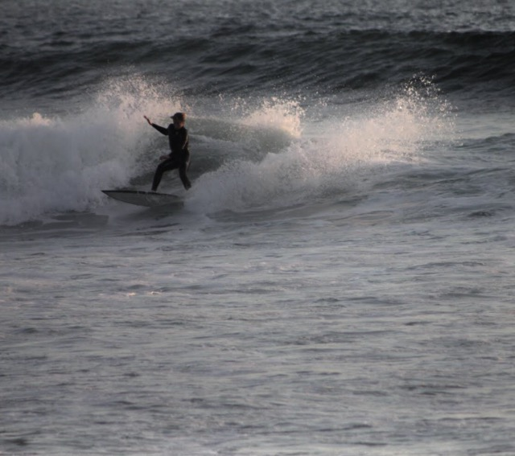

As Jeff Spicoli once said, "Surfing is not a sport, its a way of life, you know a hobby. Its a way of looking at that wave and saying, 'Hey bud, lets party!'" Although some look at Jeff Spicoli as a punk surfer, at times he speaks words of wisdom. Surfing is a way of life.

The history of surfing in Hawaii goes back to the 4th century a.d.. Polynesian’s began to make their way to the Hawaiian Island from Tahiti and the Marquesas. They brought many of their customs with them including playing in the surf on Paipo(belly) boards. During the 1940’s, a lot of American soldiers stationed at Pearl Harbor were introduced to surfing. The number of people interested in the sport continued to grow. The history of sufing in Hawaii changed to the point that some people even quit their jobs in the late 1940’s to move to Oahu to surf the big waves of Makaha Beach, Sunset Beach and Waimea Beach.